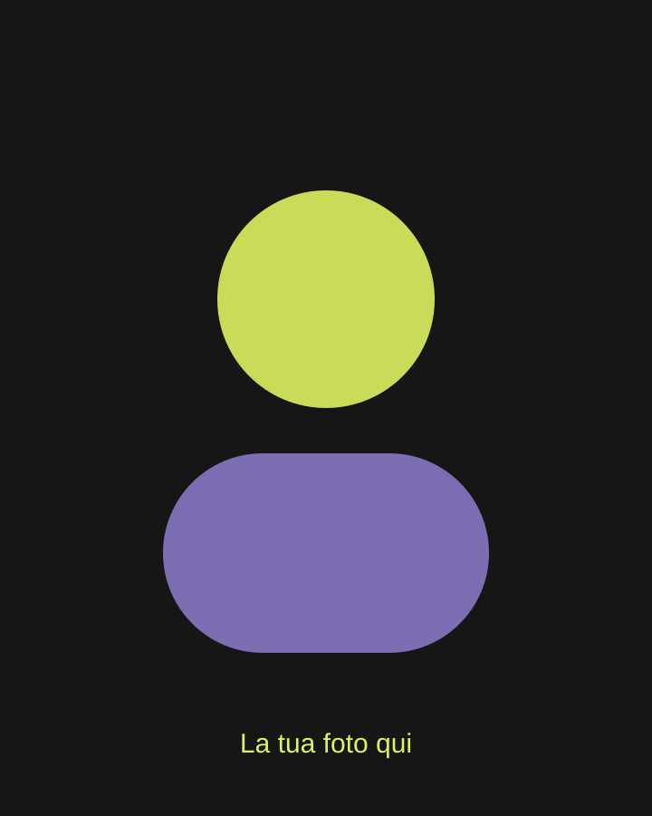

Il percorso
Sono partito dalla visualizzazione di prodotto: render, animazioni, viste tecniche. Poi sono arrivati i configuratori 3D realtime, dove il modello non serve più a fare una bella immagine ma a far scegliere e ordinare un prodotto vero. Infine l'acquisizione da campione fisico: quando il file non c'è, il punto di partenza è l'oggetto.
Sono quindici anni nella stessa direzione: portare il prodotto dal fisico al digitale senza perdere fedeltà. Sul campo ho visto dove i progetti si bloccano — quasi mai per il software, quasi sempre per una decisione presa male all'inizio.
Oggi il mio lavoro è soprattutto questo: aiutare le PMI manifatturiere a capire cosa digitalizzare e come, prima di comprare strumenti. Un configuratore, un catalogo 3D o un'animazione hanno senso solo se rispondono a un problema di vendita, di produzione o di assistenza. Se non lo fanno, lo dico.
[AGGIUNGI: episodio o esperienza significativa — il primo configuratore, un progetto che ha cambiato metodo, un errore da cui è nata una regola]
[AGGIUNGI: come lavori con un cliente nuovo — primo incontro, cosa chiedi, cosa consegni]
I numeri
Numeri aggiornati a oggi. Contano meno del fatto che buona parte di questi clienti sia tornata con un secondo progetto.
Dicono di me
[AGGIUNGI: citazione cliente — nome e ruolo]
[AGGIUNGI: azienda e settore]
[AGGIUNGI: citazione cliente — nome e ruolo]
[AGGIUNGI: azienda e settore]
[AGGIUNGI: citazione cliente — nome e ruolo]
[AGGIUNGI: azienda e settore]
Clienti
Altrenotti · Marmogranito · DND Martinelli · Robosan · Heltyair · Intimissimi · Prussiani Engineering
Parliamone
Raccontami il prodotto e il punto in cui sei. Ti dico cosa digitalizzare, cosa no e in che ordine.